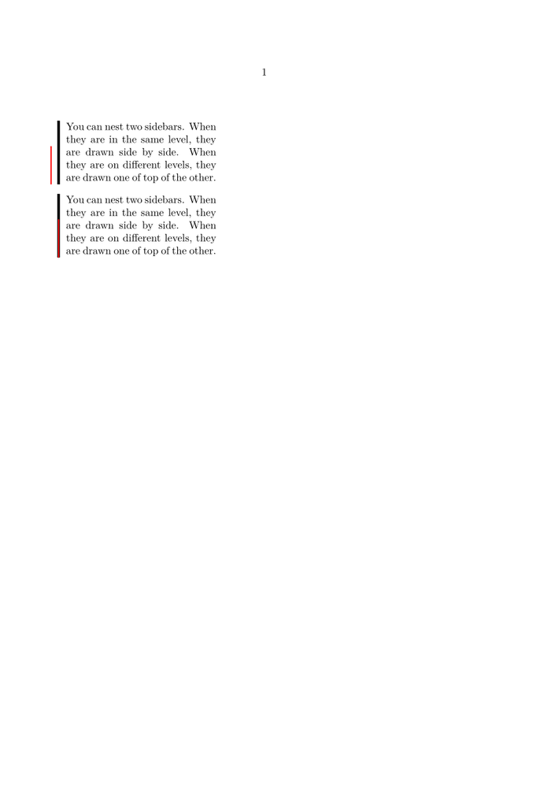

Contents
Summary
The environment \startsidebar ... \stopsidebar is used to mark with a vertical bar the text falling between the two commands. See \setupsidebar.
Settings
Description
Examples
Sidebars can be nested
-
\definesidebar[first][distance=2mm,rulethickness=2pt] \definesidebar[second][distance=2mm,rulethickness=1pt,rulecolor=red] \starttext \hsize=4cm \startsidebar[first] You can nest two sidebars. When they are in the same level, they are drawn side by side. \startsidebar[second] When they are on different levels, they are drawn one of top of the other.\stopsidebar\stopsidebar \blank \setupsidebar[first][level=1] \setupsidebar[second][level=2] \startsidebar[first] You can nest two sidebars. When they are in the same level, they are drawn side by side. \startsidebar[second] When they are on different levels, they are drawn one of top of the other.\stopsidebar\stopsidebar \stoptext
(see \setupsidebar for more examples)
- 